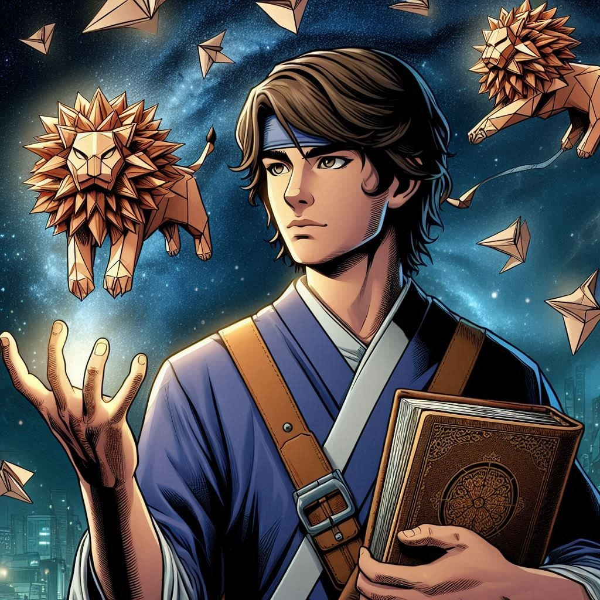

Origami Lion: The Paper Guardian of Boston

A Librarian's Awakening
Benjamin Boesch grew up in a world of stories. The son of a
history professor and an art teacher, Ben found solace in
books, particularly tales of magic and ancient traditions.
While his peers excelled in athletics, Ben discovered his
strength in imagination and creativity.
During a rainy afternoon at a local Starbucks, Ben's life changed forever. Reading the Journal of Nossori Saburō, an ancient text on magical origami, he experienced a supernatural awakening. With a single fold, he created his first living origami lion—a creature that embodied the courage he had always sought but never found in himself.
Discovering Power
Ben's abilities defied conventional understanding. He could
fold paper into living, breathing guardians that responded
to his emotions and intentions. Each origami creation
carried a piece of his spirit—protective, compassionate, and
resilient. His early experiments were unpredictable, with
lions sometimes appearing more whimsical than fierce.
Local community members became his first supporters. Ben began teaching origami workshops, using his growing abilities to inspire children and connect with his neighborhood. His young friend Clara became a crucial ally, helping him understand and control his emerging powers.
Confronting Darkness
The emergence of Flashfire, a destructive villain, forced
Ben to take his abilities seriously. Their confrontations
became a crucible for his developing powers. Each battle
challenged Ben to transform from a hesitant librarian into a
true hero, learning to create more powerful and precise
origami guardians.
His nemesis saw Ben as a trivial obstacle, but Ben saw an opportunity to prove that creativity and compassion could overcome raw destructive power. He studied the Tome of Nossori Saburō, searching for deeper understanding of his magical origami techniques.
The Academy's Call
Captain Marvel discovered Ben during a community workshop
where his origami lions came to life to protect children
from a potential threat. Recognizing the unique potential of
his abilities, she invited him to join the Boston Avengers
Academy.
At BAA, Ben's training focused on transforming his artistic abilities into tactical combat skills. Courses like "Exploring Your Super Powers" helped him understand the depth of his magical origami. He learned to create more complex and purposeful guardians, each fold becoming a precise weapon of protection.
A Hero Emerges
Ben's teammates quickly discovered the power of his
abilities. His origami lions could scout, protect, and
engage in combat with surprising effectiveness. During team
exercises, he developed techniques to create multiple
guardians, each with unique capabilities.
His connection to the Tome of Nossori Saburō continued to deepen his understanding. Ben worked to translate the ancient text, slowly unlocking more sophisticated magical origami techniques. His quarters at BAA became a workspace of creativity, filled with carefully folded paper and magical implements.
Present Day
As a Probationary Avenger, Ben Boesch represents a different
kind of hero. His origami lions stand as guardians of
Boston, protecting the city with a blend of artistic
precision and magical energy. He continues to teach
workshops, believing that creativity can be a powerful form
of heroism. Though still working to fully understand his
powers, Ben has transformed from a hesitant librarian into
the Origami Lion—a protector who proves that true strength
comes in many forms.
Ben's Origami Powers and Techniques
Through study of the Tome of Nossori Saburō
and his own experiments, Ben has developed the following
origami-based abilities: